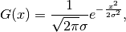

SmoothMD dialog.
Table of Contents
| Name | Direction | Type | Default | Description |
|---|---|---|---|---|
| InputWorkspace | Input | IMDHistoWorkspace | Mandatory | An input MDHistoWorkspace to smooth. |
| WidthVector | Input | dbl list | Mandatory | Width vector. Either specify the width in n-pixels for each dimension, or provide a single entry (n-pixels) for all dimensions. Must be odd integers if Hat function is chosen. |
| Function | Input | string | Hat | Smoothing function. Defaults to Hat. Allowed values: [‘Hat’, ‘Gaussian’] |
| Units | Input | string | pixels | The units that WidthVector has been specified in. Allowed values are: pixels, . Allowed values: [‘pixels’] |
| InputNormalizationWorkspace | Input | IMDHistoWorkspace | Multidimensional weighting workspace. Optional. | |
| OutputWorkspace | Output | IMDHistoWorkspace | Mandatory | An output smoothed MDHistoWorkspace. |
Provides smoothing of MDHistoWorkspace in n-dimensions. The WidthVector relates to the number of pixels to include in the width for each dimension. WidthVector must contain entries that are odd numbers.
A InputNormalizationWorkspace may optionally be provided. Such workspaces must have exactly the same shape as the InputWorkspace. Where the signal values from this workspace are zero, the corresponding smoothed value will be NaN. Any un-smoothed values from the InputWorkspace corresponding to zero in the InputNormalizationWorkspace will be ignored during neighbour calculations, so effectively omitted from the smoothing altogether. Note that the NormalizationWorkspace is not changed, and needs to be smoothed as well, using the same parameters and InputNormalizationWorkspace as the original data.

No smoothing

Smooth with WidthVector=5
The WidthVector property defines the width of the smoothing function in each dimension in units of pixels. If “Hat” is chosen as the smoothing function then the WidthVector must only contain odd integer values, such that the filter will have a central pixel. For the “Gaussian” option the width is defined as the full width at half maximum (FWHM). Where the Gaussian function in 1D is defined as

the FWHM is given by

The Gaussian filter uses values which are integrated over the width of the pixel and is truncated at the point where the value of the pixel falls to less than 0.02 of the central pixel.
Example - SmoothMD
ws = CreateMDWorkspace(Dimensions=2, Extents=[-10,10,-10,10], Names='A,B', Units='U,U')
FakeMDEventData(InputWorkspace=ws, PeakParams='100000,-5,0,1')
FakeMDEventData(InputWorkspace=ws, PeakParams='100000,5,0,1')
histogram = BinMD(InputWorkspace=ws, AlignedDim0='A,-10,10,50', AlignedDim1='B,-10,10,50', OutputExtents='-10,10,-10,10,-10,10', OutputBins='10,10,10')
# plotSlice(histogram)
smoothed = SmoothMD(InputWorkspace=histogram, WidthVector=5, Function='Hat')
# plotSlice(smoothed)
print('Smoothed has {0} points'.format(smoothed.getNPoints()))
Output:
Smoothed has 2500 points
Categories: AlgorithmIndex | MDAlgorithms\Transforms
C++ header: SmoothMD.h (last modified: 2018-10-05)
C++ source: SmoothMD.cpp (last modified: 2020-01-09)